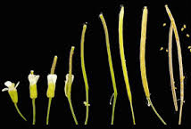

Pollination
May 4, 2021 | 5 min read

May 4, 2021 | 5 min read
Botanists and biologists began to research A. thaliana in the early 1900s, and the first systematic description of mutants was done around 1945. A. thaliana is now widely used for studying plant sciences, including genetics, evolution, population genetics, and plant development. One of the most important techniques in model organism based research is maintaining the generations of the model organisms. The production of consecutive generations of your model with a specific genome for your experiment involves specific crossing of parents to get daughter plant generations.
Here we look into the technique of doing just that.
Arabidopsis is an excellent genetic model plant, however, its small size makes crossing experiments a bit of a challenge. For the most efficient crossings, we choose a mother plant at a stage when they have developed 5-6 inflorescences, and father plants that have started to form siliques.
Begin by removing mature siliques and open flowers from the plant. This also includes buds with white tips. This makes screening for the genetic line that we are looking for all the more easy.
When trying to generate specific genetic lines one needs to avoid self pollination (the arabidopsis model has bisexual flowers). To do so, the technique of emasculation is taken up on the mother plant. Emasculation is not a nice thing at all, so we need to be at least gentle with the poor plants. Emasculation involves removing the anthers of flowers while they are still in the bud stage. Arabidopsis is very efficient in self-pollination, therefore, care has to be taken to remove anthers in time. This is done under a microscope. A flower in the bud stage has immature anthers and thus this is the best time to remove them. There are generally 6 anthers in a bud, although some may have 4 or 5. It is important to keep count. All the buds in the mother plant need to be emasculated to ensure that no self pollination occurs. Mark the emasculated buds.
The plant is allowed to grow for 2 to 3 days after emasculation. At this stage the stigma of the emasculated buds are receptive to incoming pollen. If flowers have a swollen gynoecium, this means that the anthers in that bud were not removed correctly and the flower needs to be removed.
The process of pollination involves taking the pollen off the male flower and with a pair of forceps under a microscope sprinkling said pollen onto the female stigma. The goal is to have the entire stigma covered with pollen.
The sprinkling is achieved by gentle tapping of the forcep with pollen onto the mother's stigma. After this, mark the pollinated flowers.
The hybrid siliques with the cross pollinated seeds take around 25 days to develop. After which they can be stored.

Figure 1.Arabidopsis plant with inflorescences and siliques.

Figure 2.Pollinated arabidopsis developmen

Figure 3.Arabidopsis bisexual flower.

May 4, 2021 | 3 min read

May 4, 2021 | 4 min read